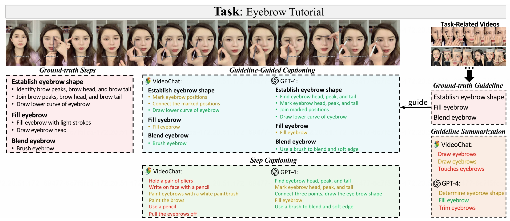

Guide Dataset
Comparison of Guide and other video datasets with annotations
GUIDE covers videos of 1) various domains, 2) with many step annotations per video, and 3) high-quality
step captions written by human annotators and gpt-3.5-turto.

Task Definition
Step Caption
The step captioning task evaluates the models’capabilities tounderstand the procedural temporal knowledge of the instructional video. In this task, models have to generate a set ofinstructional step captions.
Guideline Summarization
The guideline summarization task evaluates the models’capabilities to analyze correlations across videos. In this task models have to mine the common pattern in task-related videosand summarize a guideline from them.
Guideline-Guided Captioning
To explore the impact of guidelines on step captioning, wepropose the guideline-guided captioning task. In this task,models have to generate specific step captions under the guideof guideline.
The step captioning task evaluates the models’capabilities tounderstand the procedural temporal knowledge of the instructional video. In this task, models have to generate a set ofinstructional step captions.
Guideline Summarization
The guideline summarization task evaluates the models’capabilities to analyze correlations across videos. In this task models have to mine the common pattern in task-related videosand summarize a guideline from them.
Guideline-Guided Captioning
To explore the impact of guidelines on step captioning, wepropose the guideline-guided captioning task. In this task,models have to generate specific step captions under the guideof guideline.
Video Category Distribution
The videos and text queries are collected from the HowTo100M dataset.
There are a wide variety of categories for HiREST videos.
The most frequent categories are “Hobbies and Crafts”, “Food and Entertaining”, and “Home and Garden”.

Dataset Case
We evaluate three video foundation models on GUIDE:VideoChat , Video-LLaMA and mPLUG-Owl. We evaluate four
language
foundation models on GUIDE:GPT-3.5-turbo ,GPT-4 ,Flan-T5-XXL and Vicuna-13B.

Comparison of foundation models and ground-truth annotation for step captioning, guideline summarization and
guideline-guided captioning. Green, yellow, and red text denote ‘correct’, ‘partiallycorrect’,and ‘wrong’
respectively.